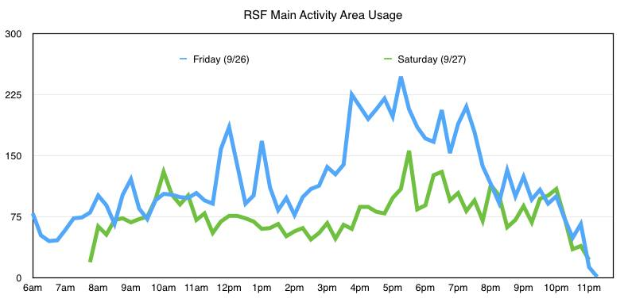

This is the prototype version of Packd, an app that will tell you just how crowded it is at your favorite places. Right now, we're seeing if there's interest by showcasing it using one of the most popular locations on UC Berkeley's campus: the RSF.
We gathered over 100,000 card swipes over the course of three years of data from the RSF to predict how crowded it will be on a given day at a given hour. All data was collected with the explicit permission of the RSF management.

Help us make this better! By choosing an option of how crowded it actually is and sending us that data, you can help adjust the prediction algorithm so that it's more accurate! Also, please let us know what you think by hitting the "Give us feedback" button on the main page.